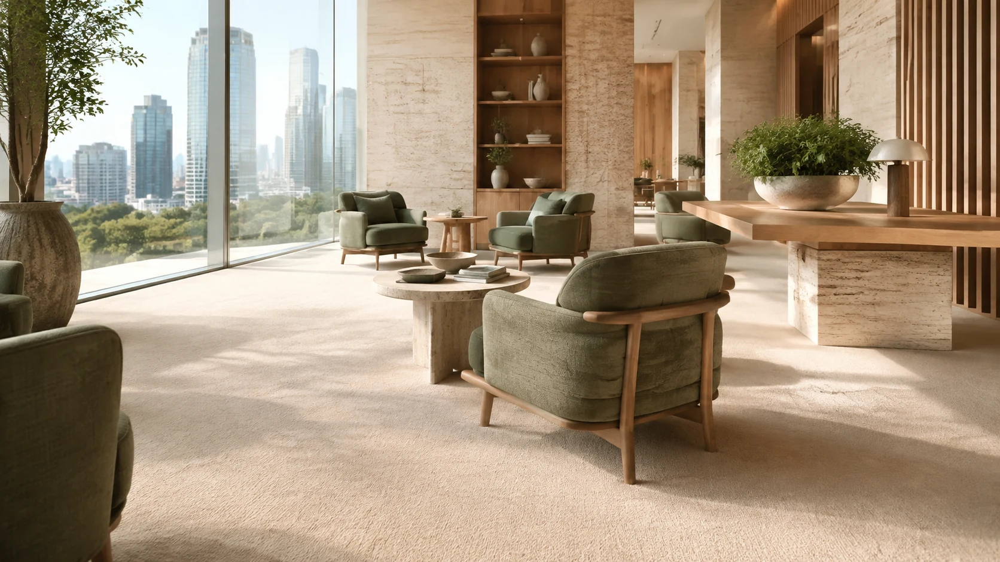

Szállodák & Panziók
Szobaszőnyegek, folyosók és közösségi terek professzionális tisztítása.
Ipari szőnyegtisztítás vállalatoknak Balatonszemesen. Irodák, hotelek, bankok szőnyegpadlóinak professzionális tisztítása.

Irodák, hotelek, bankok szőnyegpadlóinak professzionális tisztítása.
Szobaszőnyegek, folyosók és közösségi terek professzionális tisztítása.
Vendéglátóipari szőnyegek speciális kezelése. Bor-, étel- és italfoltok szakszerű eltávolítása.
Irodaházak, bankok, biztosítók szőnyegpadlóinak karbantartása.
Bérbeadott szálláshelyek szőnyegeinek szezonális tisztítása. Airbnb, Booking üzemeltetőknek.
Helyszíni szemle és területfelmérés. Szőnyegtípus, forgalom és szennyezettség vizsgálata.
Pontos m² alapú kalkuláció.
Speciális foltkezelés és por eltávolítás. Forgalmas területek kiemelt kezelése.
Extrakciós gépparkkal végzett mélytisztítás.
Minden ár az állapottól függően változhat. Pontos árajánlatért hívj!
Hívj most és kérj ingyenes árajánlatot ipari szőnyegtisztítás szolgáltatásunkra!
info@ecocleantisztito.hu